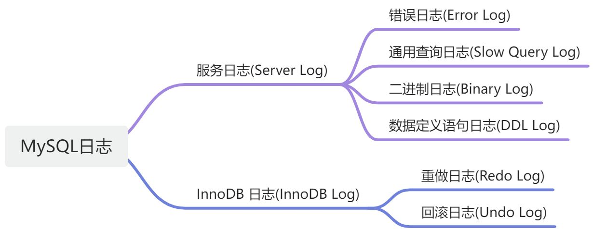

MySQL的日志
MySQL日志概述
MySQL的日志包含服务日志(Server Log)和默认存储引擎InnoDB日志(InnoDB
Log)两个模块，细分下去有错误日志(Error Log)、通用查询日志(General Query
Log)、二进制日志(Binary Log)、慢查询日志(Slow Query
Log)、数据定义语句日志(DDL Log)、重做日志(Redo Log)、回滚日志(Undo
Log)。其关系图如下：

这几种日志的功能比较好理解：
错误日志 > 记录了mysqld启动和关闭的时间、整个从启动到关闭的运行期间的诊断消息（错误、警告、提示）。
通用查询日志 > 记录了客户端断开和连接时的信息，以及所有客户端发送给mysqld的SQL语句。
慢查询日志 > 慢查询日志记录了执行时间超过long_query_time秒并且查询记录行数超过min_examined_row_limit行的SQL语句信息。
DDL日志 > DDL日志又称元数据日志记录了数据定义语句产生的会影响表格分区的元数据操作。
下面我们将详细说明稍微复杂一些的三个日志。
二进制日志 Binary Log
二进制日志的作用
二进制日志包含了所有数据库修改的操作，例如创建表、修改表数据。如果没有配置为row-based模式的话，二进制日志还会包含可能产生修改的语句，例如不匹配任何行的delete语句。每一条修改数据语句的执行时间也同样记录在二进制日志。
二进制日志主要是为了：
复制 > 二进制日志包含了数据库创建以来所有的修改操作及数据，因此通过在其他服务上重复这些修改，即可实现数据库的完整复制。
数据恢复
一些数据恢复操作需要使用到二进制日志。备份恢复后，二进制日志中在备份后记录的事件将被重新执行。这些事件会将数据库从备份时间点恢复到最新状态。
在启用二进制日志的情况下运行服务器，性能会略微降低。不过相比于二进制日志在复制和还原操作方面的优势，这种性能损失是可以接受的。
由于只会记录和回读完整的事务，二进制日志是完整的，一般不会意外停止。
二进制日志格式
服务器通过配置--binlog-format有三种格式保存二进制日志：
- 语句
STATEMENT - 行
ROW - 混合
MIXED
语句格式STATEMENT是通过之间记录原始的SQL语句，日志中会保留函数的调用，例如update_time=now()。这样可能导致数据库的不一致。
行格式ROW则是将语句细化为对行的影响进行记录。因此表必须始终存在主键来标识行。
混合格式MIXED通过混合STATEMENT和ROW，默认通过STATEMENT进行记录，但在一些情况下会自动切换到ROW模式下记录。
日志记录格式也可由所使用的存储引擎设置或限制。这有助于消除在使用不同存储引擎的源和副本之间复制某些语句时出现的问题。
重做日志 Redo Log
重做日志是一种基于磁盘的数据结构，在崩溃恢复期间用于纠正未完成事务写入的数据。
在正常运行期间，重做日志会对
SQL 语句或底层 API
调用产生的更改表数据的请求进行编码。在意外关机前未完成更新数据文件的修改会在初始化期间和接受连接前自动重放。
默认情况下，重做日志在磁盘上由两个名为
ib_logfile0 和 ib_logfile1 的文件物理表示。MySQL
以循环方式写入重做日志文件。
回滚日志 Undo Log
回滚日志是与单个读写事务相关的回滚日志记录的集合。回滚日志包含着如何回滚最新的聚类索引记录的改动。
如果其他事务需要查看原先的数据作为一致性读操作，则会检索回滚日志从而获取未改动的数据。这样为其他事务提供快照读，也被称为多版本并发控制MVCC。
回滚日志保存在回滚日志段内，回滚日志段包含在回滚段里面。回滚段则在系统表空间、重做表空间和临时表空间中。
总结
二进制日志与备份合作可以保证数据库恢复到最新的事务提交的时刻。二进制日志也作用于实现数据库的高可用，如主备、主从等模式的同步都需要二进制日志完成。二进制日志侧重于一致性。
重做日志聚焦于将为提交的事务操作持久化，用于奔溃恢复期间对于未完成的事务的恢复，体现了持久性。
回滚日志主要是在发生异常时，将已经生效的操作进行回滚，从而保障事务的原子性。
上面分开说明了三个日志的侧重点，然而三者并不是独立运作的，在绝大部分场景下其实是相互结合发挥作用，如重做日志和二进制日志也一同作为二阶段提交的重要阶段来保障事务的原子性；二进制日志对已提交事务的持久化是重做日志运作的基础。